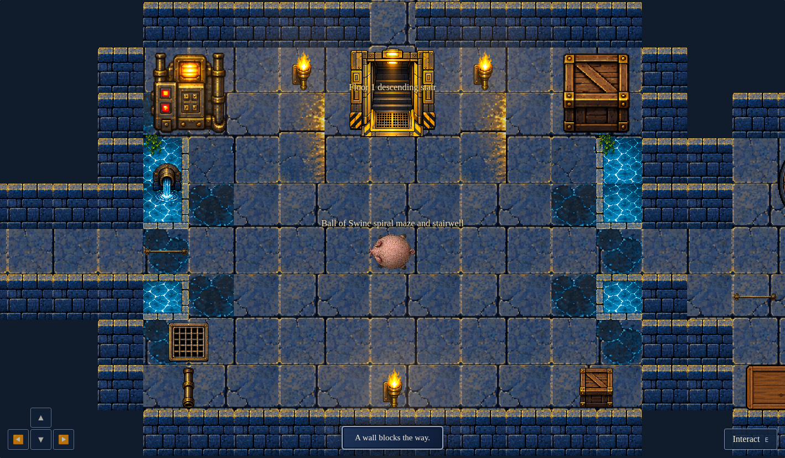
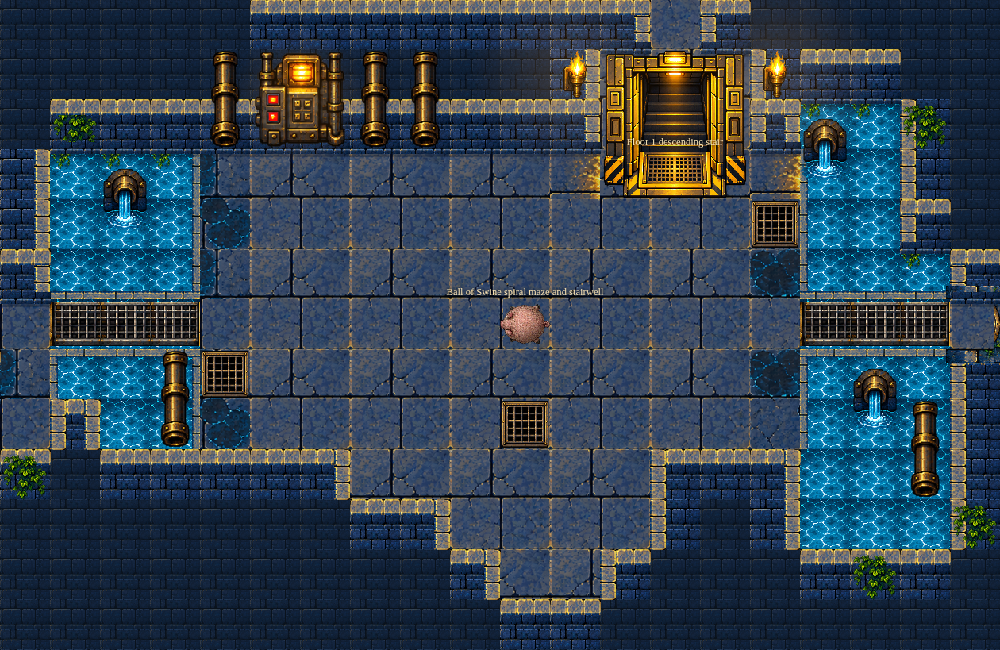
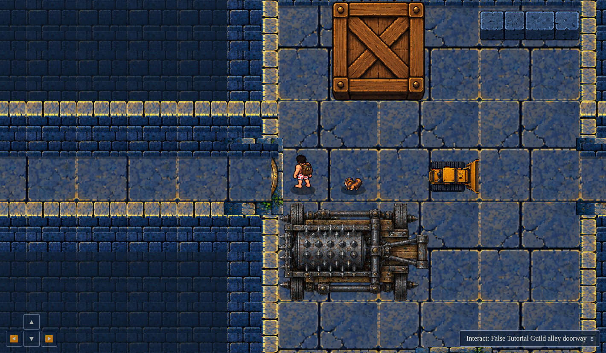
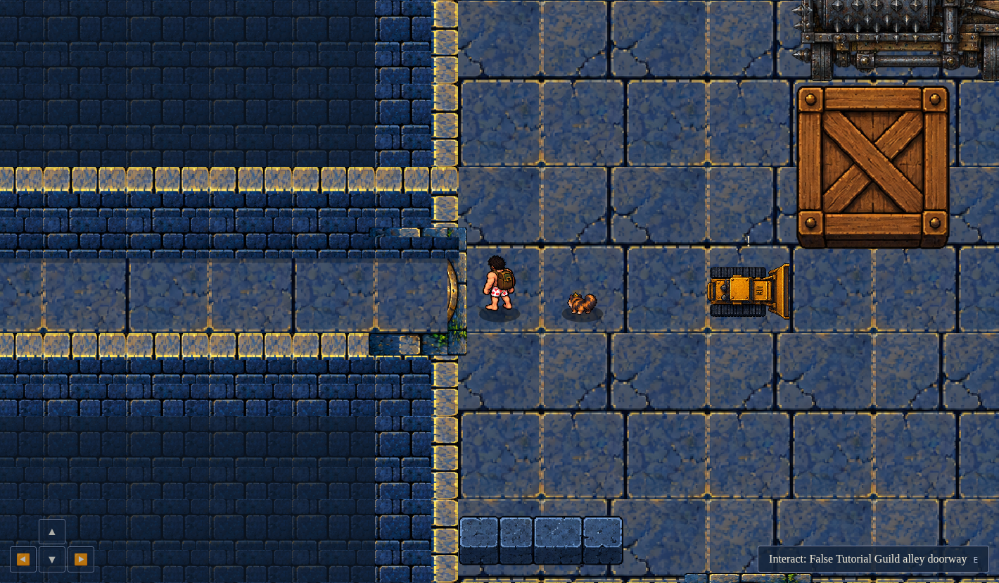
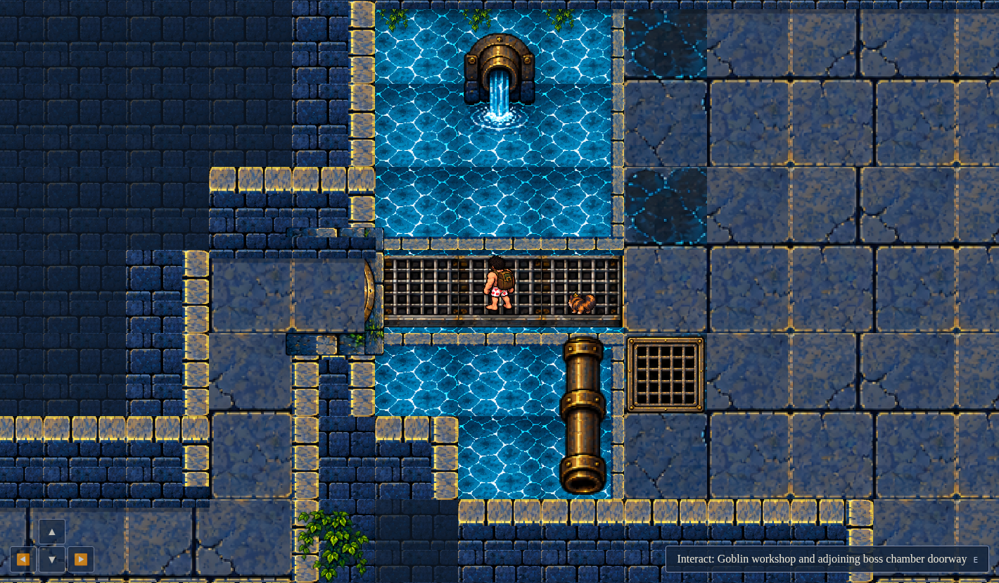

Original clean-map reference, prior generated boss room, and updated actual browser render. Room captures use camera-only framing, crop the actual screenshot to the generated room plus one tile border, and hide external DOM controls/toast/battle banner. Door/bridge closeups and combat retain full UI. World objects, sprites, labels and geometry remain actual. Movement and combat are real keyboard / UI play.




